말이 코드가 되는 시대
바이브 코딩(Vibe Coding)의 이상과 현실, 그리고 프로덕션 엔지니어링
강사 소개
차민규
AI Engineer · Agentic AI Team
LG AI & Big Data Group
주요 경력 (Career)
- 現 LG AI & Big Data Group, Agentic AI 팀 AI Engineer
- 前 우리은행 (Bank Woori), AI전략센터 AI플랫폼팀
- 前 LG AX Group, AI & Big Data Analytics 팀
학력 (Education)
- • University of Central Florida 컴퓨터공학 박사수료
- • GIST (광주과학기술원) 전자공학 석사
- • 한국외국어대학교 컴퓨터공학 학사
3시간 튜토리얼 로드맵 (총 180분)
기초 이론 & 본질
에이전트 연구 계보와 바이브 코딩의 본질, '시스템 지휘자'의 4대 핵심 역량
ReAct 패러다임 · AutoGPT 실패 요인 · SWE-bench 실증
Vibe Iceberg 현실 · 아키텍처·하네스·명세·보안 4대 역량
실전 팁 & 핸즈온 실습
실제 바이브 코딩 팁을 배우며 노트북으로 즉시 코드를 작성·실행하는 워크숍
동적 런타임 붕괴 방지 · Rust/Go/TS 컴파일러 자가치유 루프
PBMC 3k 실습 · AGENTS.md 헌법 · INTENT/PLAN 3대 문서
4대 에이전트 병렬 운용 · 컨텍스트 오염 방지 워크트리 격리
비용, 런칭 & 가드레일
토큰 80~90% 절감, 완성된 코드의 1시간 글로벌 배포와 프로덕션 보안
Prompt Caching 원리 · AST 기반 코드 스켈레톤 압축
BaaS 레고 블록 조립 · 무료 티어로 1시간 글로벌 배포
DB RLS 보안 누수 방어 · Supply-chain 가드레일 & 총정리
강의 세부 내용 아젠다 (Chapter 01 ~ 08)
계보 : 챗봇에서 자율 에이전트까지 (2022 ~ 2026)
LLM은 더 이상 질문에 그럴듯한 텍스트로 답하는 단순 말동무가 아닙니다. 단일 모놀리식의 좌절과 학술적 분업 연구, 그리고 추론 모델을 거쳐 현재의 자율 워크스페이스로 진화한 5단계 패러다임 로드맵을 추적합니다.
ChatGPT
1회성 텍스트 질의응답. 도구 실행과 환경 관찰(눈)이 전무했던 수동 대화 챗봇.
AutoGPT · ReAct
Thought-Act-Observe 루프 태동. 단일 컨텍스트 오염과 연쇄 환각의 좌절.
MetaGPT · CoALA
SOP 명세 강제로 환각 차단. 인지과학 4대 메모리(작업·일화·의미·절차) 체계화.
o1/o3 · Repo Map
Test-Time Compute로 실행 전 가상 검증. Tree-sitter + PageRank로 토큰 80% 절감.
Grok · Worktree
클라우드 비동기 Outer Loop와 초고속 국소 Inner Loop의 물리적 분리 체제.
1.1 프롬프트의 종말과 ReAct 패러다임의 탄생
프롬프트를 수십 번 고쳐 쓰는 테크닉의 한계 ➔ LLM에게 손(도구 실행)과 눈(환경 관찰)을 주어 상태 머신으로 진화시킨 결정적 분기점:
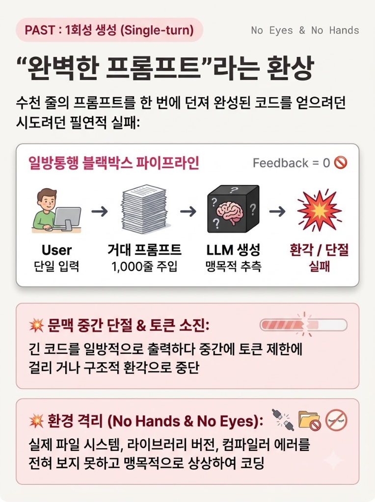
손과 눈을 부여한 ReAct 루프
ReAct(Yao et al., ICLR 2023): LLM을 단순 텍스트 생성기가 아닌 상태 머신(State Machine)으로 진화:
1.2 AutoGPT(2023.03)의 등장과 Monolithic의 좌절
인간의 개입 없는 자율 멀티턴의 첫 시도 ➔ 단일 컨텍스트에 모든 역할을 몰아넣은 모놀리식 구조의 필연적 붕괴:
단일 에이전트의 '자율 멀티턴' 패러다임
인간이 질문-답을 매 턴 반복하는 대신, 에이전트 1명이 단일 목표를 접수하고 백그라운드에서 4단계 루프를 스스로 멀티턴하여 결과를 도출:
왜 실전 소프트웨어 개발에 실패했는가?
단일 LLM 컨텍스트에 모든 역할을 몰아넣은 Monolithic 구조의 치명적 한계 3가지:
수십 턴 동안 터미널 에러 로그와 파일 덤프가 쌓이면서, 최초 유저가 지시했던 원래 목표(Original Goal)를 완전히 망각하고 표류.
자신이 상상한 가짜 파일 경로를 사실로 믿고, 이를 고치려다 엉뚱한 폴더를 무한 생성·삭제하며 크레딧과 컨텍스트만 전소.
복잡한 실전 리포지토리 태스크 성공률이 1.96%에 그치며, 단일 루프로는 상용 프로덕션 투입이 불가능함을 입증.
1.3 2023년 하반기 ~ 2024년 학술 연구 대폭발 : Multi-Agent & CoALA
자유 잡담을 금지하고 소프트웨어 엔지니어링 SOP(표준운영절차)와 인지과학 메모리를 결합한 분업 체계의 정립:
소프트웨어 회사를 객체지향 클래스 & SOP로 추상화한 Multi-Agent 구조
가상 SW 기업 모방. CEO-CTO-개발자 간 Chat-Chain 교차 검증.
가중치 미수정. 언어적 자가 반성 버퍼로 오류를 피드백해 치유.
인지과학 기반: 작업·일화·의미·절차 메모리 4분할 체계화.
1.4 SWE-bench와 2025년 추론 모델(Test-Time Compute) 혁신
자가 치유(Self-Healing) & SWE-bench v2
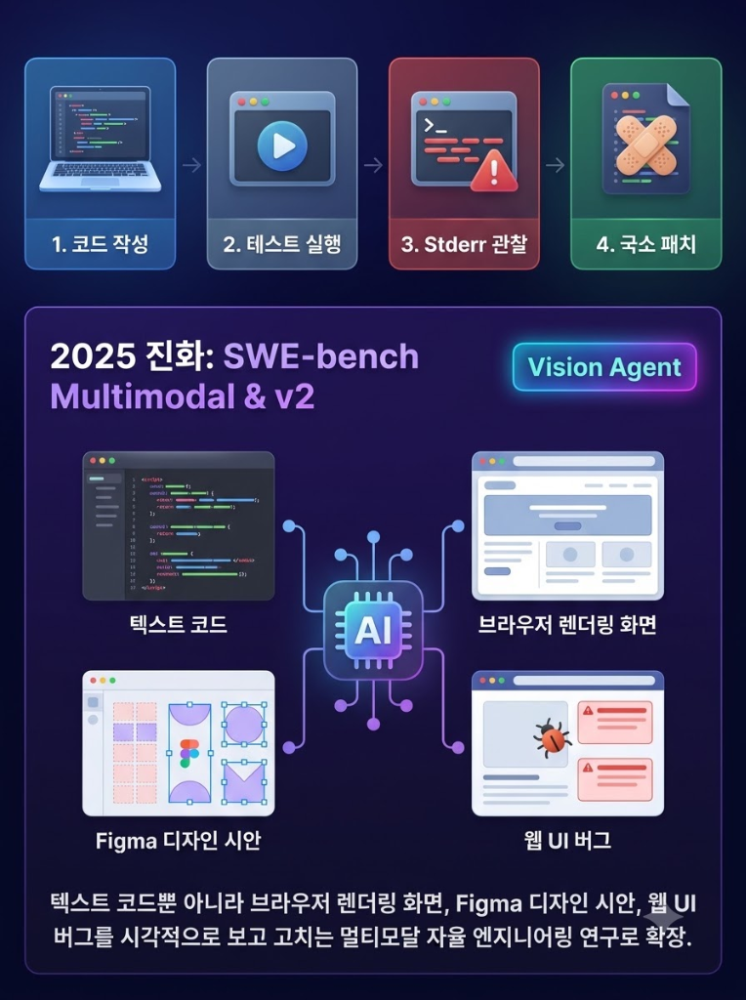
추론 시간 연산(Test-Time Compute) & Repo Map
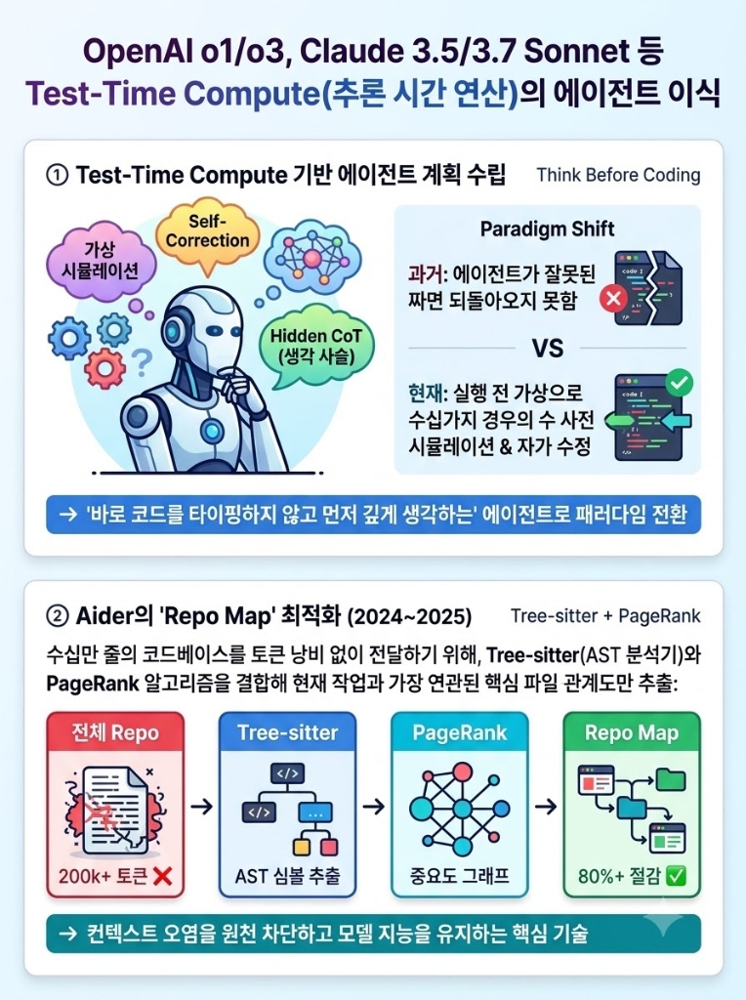
Chapter 01 요약 : 에이전트 진화의 4대 본질과 도출점
단일 챗봇에서 멀티에이전트 오케스트레이터로의 계보가 남긴 실전 엔지니어링의 나침반:
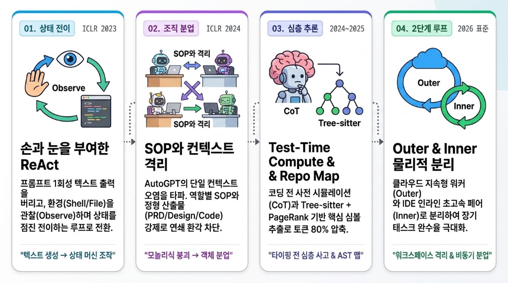
모델 체급보다 도구 환경(Environment)과 피드백 루프가 성능을 35배 결정. 프롬프트 테크닉 대신 린터·테스트 피드백이 핵심.
본질 : 바이브 코딩이란 무엇인가
"I vibe code. I see stuff, say stuff, run stuff, and it mostly works."
Andrej Karpathy의 이 한마디는 프로그래밍의 문법 장벽을 무너뜨렸지만, 동시에 새로운 기술 부채와 환상을 낳았습니다.
2.1 바이브 코딩 : 챗봇 스니펫에서 '자율 프로젝트 합성'으로
함수 하나를 물어보고 손수 복사-붙여넣기하던 챗봇의 시대를 지나, 프롬프트 하나로 전체 프로젝트를 자율 구축하는 패러다임 전환:
요청하신 Node.js 인증 및 결제 처리 함수 스니펫입니다:
2.2 소프트웨어 추상화 계층의 대전환 : 말이 코드가 되는 원리
과거 프로그래밍 언어가 사람과 바이너리 사이를 번역했다면, 이제 사람 앞에 AI 에이전트 계층이 새롭게 적층되어 사람의 말을 코드로 번역합니다.
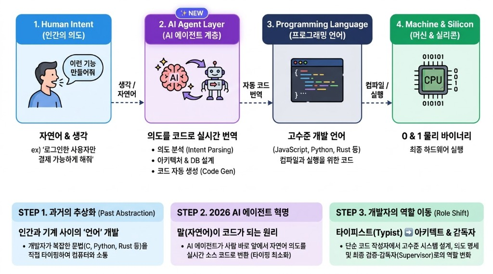
2. AI Agent Layer -> 3. Programming Language -> 4. Machine & Silicon" class="w-full h-full max-h-[570px] xl:max-h-[620px] object-contain rounded-xl" />2.3 바이브 코딩의 런타임 아키텍처 : LLM Server(뇌)와 Local Client(손·발)
자연어 의도(Intent)가 실제 동작하는 애플리케이션으로 완성되기까지, 클라우드 지능 엔진과 로컬 실행 런타임이 주고받는 자율 오케스트레이션 루프
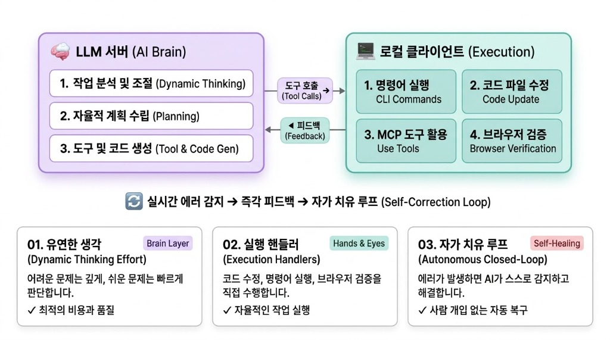
로컬 클라이언트(Execution) 자가 치유 루프" class="w-full h-full max-h-[570px] xl:max-h-[620px] object-contain rounded-xl" />2.4 이상과 현실 (Reality Check) : 한눈에 보는 6대 착각과 프로덕션 현실
"말만 하면 1시간 만에 SaaS가 완성된다"는 대중적 환상과, 현장 엔지니어가 마주하는 참혹한 프로덕션 현실의 대비:
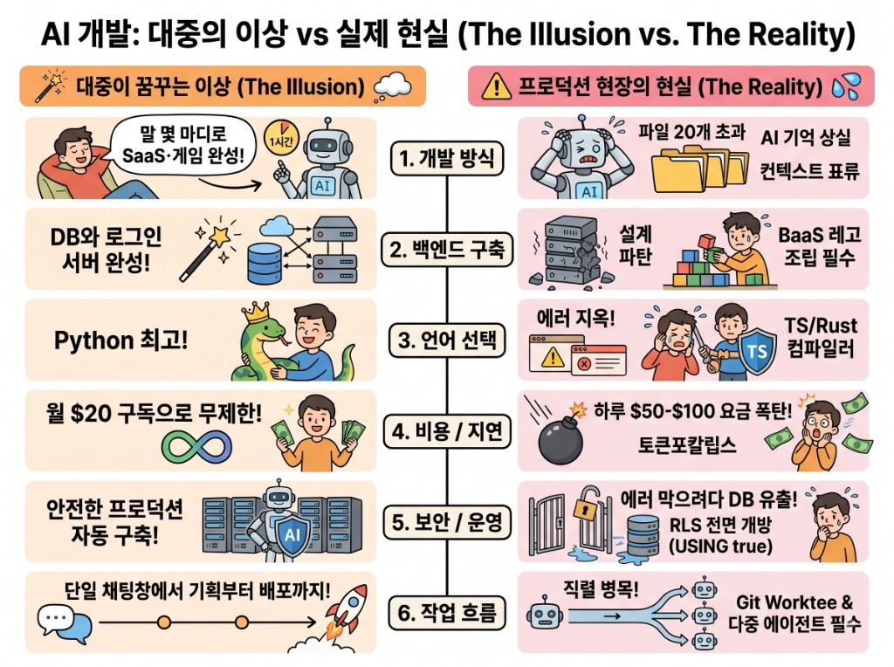
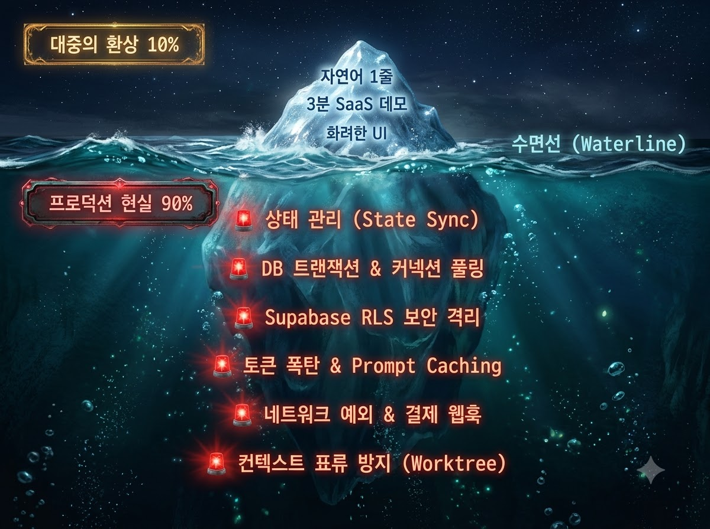
2.4 이상과 현실 (Reality Check) : ① 자연어의 한계 vs ② BaaS 레고 블록 전략
단일 파일 토이 데모를 넘어, 실제 유저와 트랜잭션이 붙는 순간 발생하는 소프트웨어 복잡계의 벽과 생존 전략:
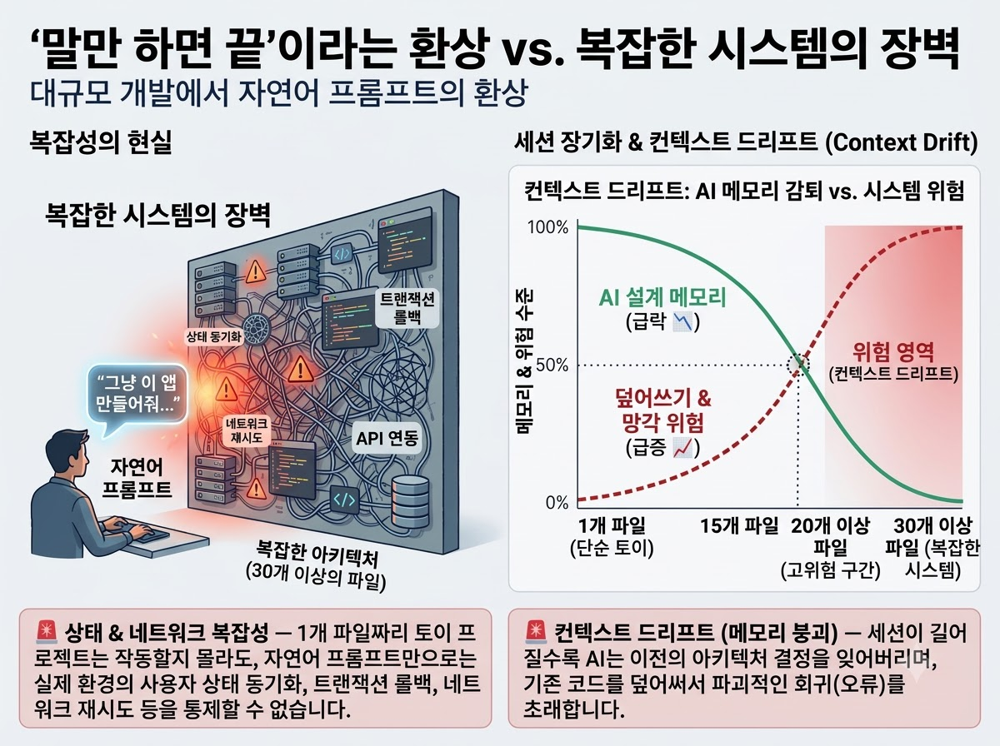
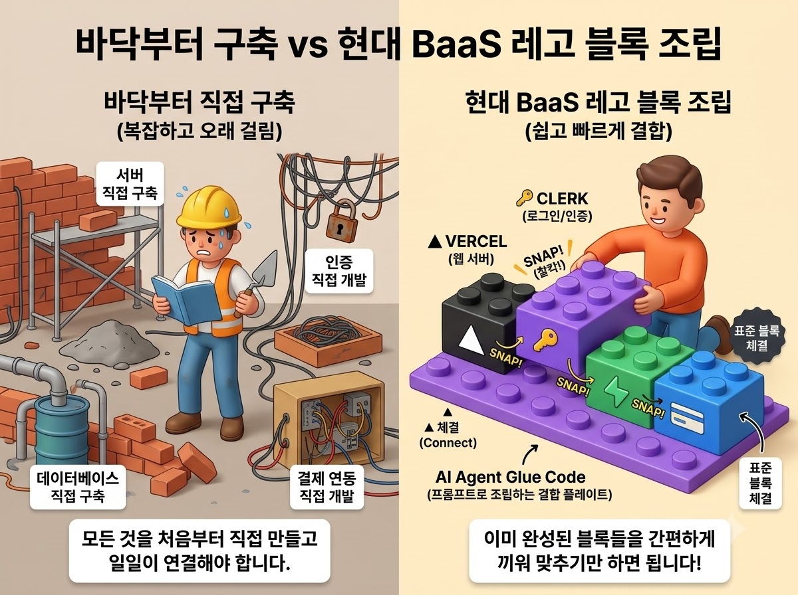
2.4 이상과 현실 (Reality Check) : ③ 토큰 요금 폭탄 vs ④ Python에 대한 의구심
에이전트의 무차별 탐색 세금(Exploration Tax)과, 당연하게 선택되던 '파이썬 기본값'에 대한 본질적인 의문과 대안 언어:
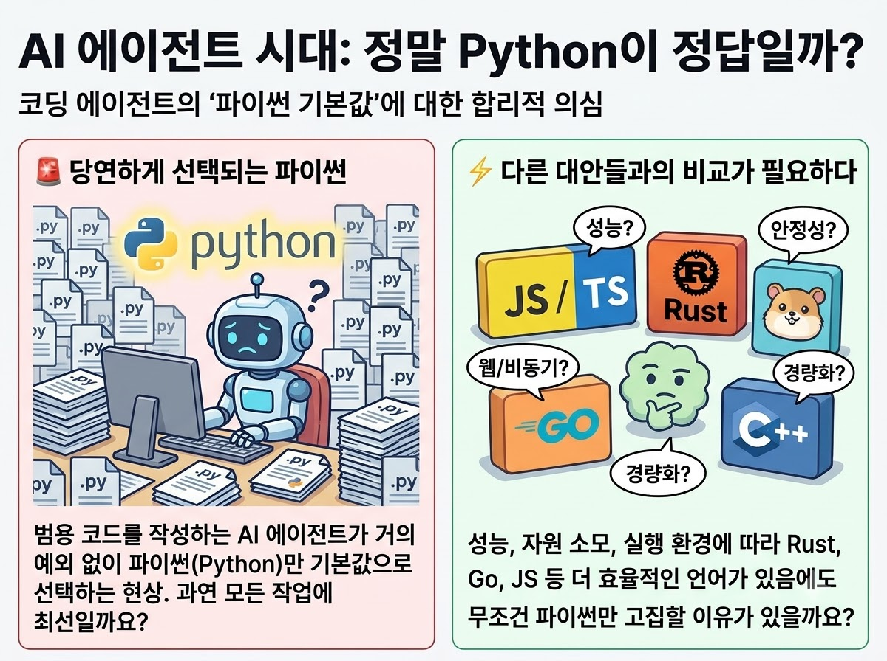
2.5 2026 바이브 코더의 4대 핵심 역량 : 코더에서 '시스템 지휘자'로
문법을 손으로 타이핑하던 시대의 종말 — 시스템 관제탑에서 AI 에이전트를 지휘하기 위한 필수 프레임워크:
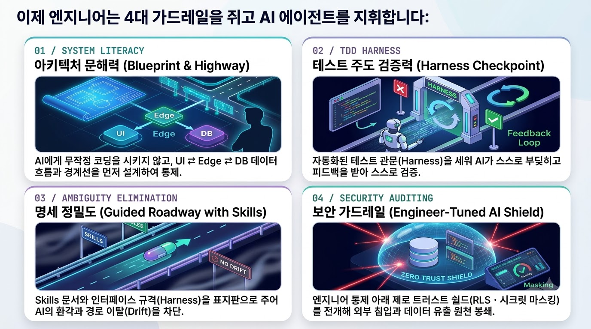
언어 : Python은 과연 최적인가?
인간에게 쉬웠던 Python의 '동적 타이핑'이 AI 에이전트에게는 치명적인 '런타임 지뢰밭'이 됩니다.
컴파일러가 0.1초 만에 Stderr 피드백을 꽂아주는 엄격한 정적 타입 언어(TypeScript 등)가 바이브 코딩에서 압도적인 생산성을 내는 이유를 실습과 함께 확인합니다.
최근 5개년 GitHub 언어 순위 변천 : 역대 최초 TypeScript 1위
AI 코딩 도구의 폭발적 보급 속에서, 개발 생태계는 '동적 타이핑'에서 '타입 안정성과 컴파일러 검증'으로 대이동했습니다.
"생산성 환상"의 종말 : Python 개발 속도 프리미엄은 유효한가?
AI가 코드를 대신 타이핑하는 시대, 지난 20년간 소프트웨어 공학을 지배해온 '생산성 vs 성능 트레이드오프'가 붕괴하고 있습니다.
"서버 비용을 더 내고 개발자 시간을 아끼자"
10~100배 느린 런타임 성능을 감수하더라도, 인간 개발자의 작성 속도가 압도적으로 빨라 빠른 출시(Time-to-Market)를 위한 최선의 경제적 선택이었습니다.
압도적인 실행 속도와 메모리 효율을 가졌으나, 장황한 타입 선언과 까다로운 컴파일 규칙 때문에 인간의 개발 공수가 3~5배 이상 소요되었습니다.
"서버 몇 대 더 띄우는 클라우드 비용이 개발자 추가 채용보다 훨씬 저렴하다"는 전제가 지난 20년간 소프트웨어 아키텍처 결정을 지배했습니다.
작성 비용 = 0, 남은 것은 언어의 순수 스펙뿐
구조체 선언, 복잡한 제네릭, 엄격한 인터페이스 정의를 AI 에이전트가 단 2초 만에 생성합니다. 인간의 타이핑 피로가 완전히 소멸했습니다.
Rust/Go의 장황함이 AI에겐 아무런 장애가 되지 않습니다. "문법이 까다롭고 손이 많이 가서 못 쓴다"는 변명이 더 이상 통하지 않는 시대입니다.
런타임에 죽는 동적 언어와 달리, 엄격한 타입 컴파일러가 AI의 환각(Hallucination)을 실시간으로 적발하고 자가 치유(Self-Healing)를 유도합니다.
과거 vs 바이브 코딩 시대 : 언어별 판세의 대역전
AI가 코드를 생성하면서 과거의 작성 편의성 강점은 평준화되고, 정적 언어의 '컴파일러 검증력'과 '네이티브 실행 성능'이 결정적 우위로 부상했습니다.
| 비교 축 Evaluation Metric | 과거 인간 단독 코딩 시대 |
바이브 코딩 시대
AI 페어 프로그래밍
GAME CHANGER
|
결과적 판세 변화 Strategic Outcome |
|---|---|---|---|
|
1
코드 작성 속도
Coding Velocity
|
Python 압승 👑
간결한 문법, 인터프리터 기반 빠른 프로토타이핑
|
완전 동등 (Zero Gap) ⚖️
AI가 Rust/Go의 보일러플레이트와 긴 선언부도 수초 만에 생성
|
Python 프리미엄 증발
작성 편의성의 독점적 경제 가치 소멸
|
|
2
디버깅 & 검증 루프
Verification & Self-Healing
|
Python 유리
인터프리터 REPL로 즉시 실행 · 에러 로그 확인
|
컴파일러의 즉각 검증 🛡️
엄격한 정적 타입 검사기가 AI 환각 코드를 터미널에서 즉각 검거
|
Go · Rust 압도적 우위
컴파일 에러 피드백 기반 자가치유(Self-healing) 성공률 극대화
|
|
3
실행 성능 (Throughput)
Runtime Throughput
|
성능 의도적 희생
인건비 절감을 위해 GIL · 인터프리터 오버헤드 감내
|
격차 불변 (10~100배 차이) ⚡
기계어 직접 실행 vs 인터프리터 런타임의 물리적 한계 불변
|
Python 단점만 고스란히 노출
생산성 방패가 사라져 느린 속도와 리소스 낭비만 부각
|
|
4
메모리 & 인프라 비용
Cloud Cost & Efficiency
|
"서버 증설이 더 싸다"
클라우드 인스턴스 스케일아웃으로 문제 해결
|
에이전트 체인 비용 폭증 💸
동시다발적 에이전트 루프 및 고빈도 API에서 서버 비용 수천만 원 차이
|
네이티브 언어 ROI 10x
클라우드 청구서 70~90% 절감 · 단일 VM으로 고트래픽 처리
|
왜 AI 에이전트 시대에 '성능 단점'이 더 치명적인가?
단순 웹 요청과 달리, AI 에이전트 루프에서는 작은 인터프리터 오버헤드가 기하급수적인 눈덩이(Snowball)로 증폭됩니다.
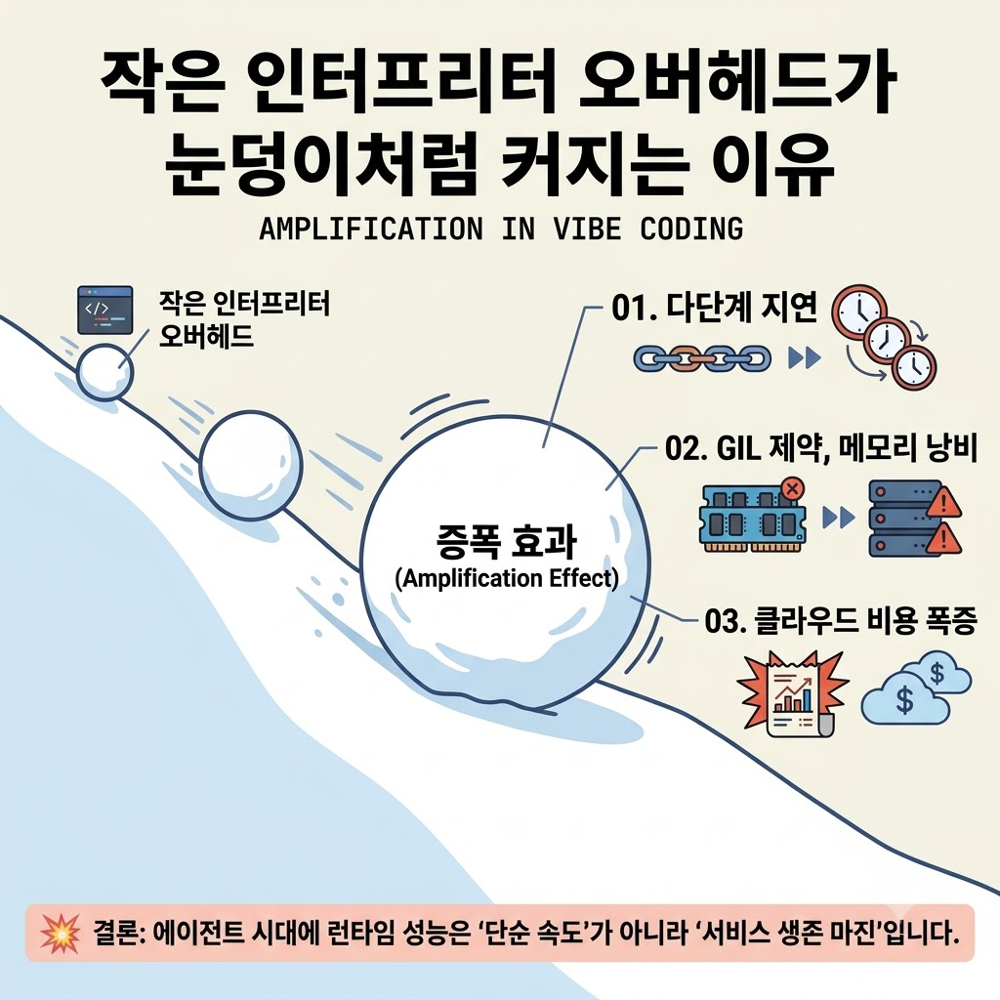
토큰 경제학과 리팩토링 안전망 : 인지 부하 vs 코드 부채
AI 에이전트 협업 환경에서는 명확한 타입 계약이 LLM의 컨텍스트를 지키고, 대규모 리팩토링 시 코드 폭증의 붕괴를 막습니다.
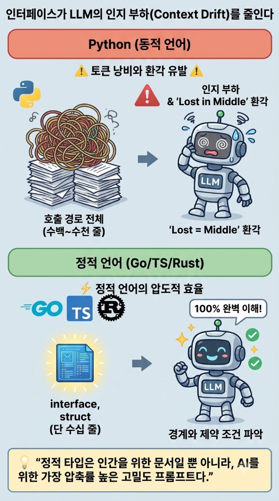
Python을 안전하게 쓰는 유일한 길 : Quality Stack
AI가 코드를 작성할 때 Python을 쓰려면, uv · Ruff · Pyright · Pydantic으로 구성된 강력한 검증 방어선이 필수적입니다.
Python + 보조 도구(Ruff/Pyright/uv)의 위력
초기 프로토타이핑은 스크립트로 극도로 빠르게 돌려보고(Fast Vibe), 검증된 핵심 로직에만 Pydantic 모델 · Type Hint를 점진 적용해 유연성 극대화.
PyTorch, Hugging Face, LangChain, vLLM, DeepSpeed 등 최신 AI 코어 프레임워크가 Python 1st-party로만 출시되어 타 언어로 대체 불가.
uv(초고속 가상환경/패키징) + Ruff(Rust 기반 린터) 도입으로 C/Rust급 수 밀리초(ms) 단위 실시간 피드백 루프 달성.
보조 도구 없이는 런타임 지뢰밭으로 돌변
신택스 검사만으로는 AttributeError를 잡을 수 없음. 반드시 Pyright 정적 분석기를 파이프라인에 배치해 배포 전 차단.
개발자가 일일이 수동 실행하지 않도록, Git Pre-commit 훅 또는 에이전트의 Bash Tool 실행 조건에 uv run ruff check을 의무화.
딕셔너리(dict) 대신 Pydantic BaseModel을 규격으로 AI에게 제공하면 불필요한 설명 토큰을 80% 줄이고 필드명 오타 원천 차단.
Python QA & 아키텍처 하네스 시연 : 5대 가드레일
Python을 쓸 때 품질과 아키텍처를 담보하는 유일한 길: Pydantic · Pyright · import-linter · Ruff · Pytest 5대 방어선 실전 시연
AI에게 코드를 맡길 때 반드시 쳐야 할 5대 안전망
LLM의 JSON 환각과 키 누락 차단. Field(gt=0) 등 스키마 위반 시 즉각 에러 발생.
AI의 빈번한 실수인 None 역참조, 잘못된 속성 접근을 런타임 전 0.1초 만에 적발.
도메인/모델이 UI나 컨트롤러를 역참조하는 순환 수렁 차단. contracts = "ui ➔ service ➔ domain" 단방향 강제.
AI가 남발하는 미사용 import, 포매팅 결함, 위험 구문을 0.01초 만에 자동 교정(ruff check --fix).
테스트 실패 로그를 본 에이전트가 코드를 스스로 수정하여 100% All-Green까지 자율 수렴.
시연 시나리오 : 에이전트 5단계 자가치유(Self-Healing) 실황
schemas.py)
입력 규격
user_id: str = Field(..., min_length=3)
amount: float = Field(..., gt=0)
currency: Literal["KRW", "USD"]
작성 즉시 uv run ruff check --fix && uv run pyright && lint-imports && uv run pytest를 실행하고,
실패 시 스스로 수정하여 All Passed 상태로 완료해."
☕ 중간 휴식 (15min) & 실습 준비 : Google Antigravity & 실습 팩 (2종)
언어 및 5대 타입 하네스 세션을 마치고 잠시 쉬어갑니다. 이어지는 실습 세션(Ch 04~06)을 위해 Google Antigravity 설치와 실습 팩 2종(스킬 번들 & 분석 데이터)을 미리 다운로드해주세요.
Google Antigravity 설치 준비
실습을 위해 Google Antigravity를 설치해주세요. 본 강의의 Skills 하네스 및 자율 서브에이전트 오케스트레이션 실습에 활용됩니다.
agent_backup.zip• 20여 개 실전 Skills · Rules(
.cursor/)• 표준 헌법 템플릿
AGENTS.md
data.zip• 10x Genomics PBMC 3k 원본 데이터
•
data/raw/pbmc3k_raw.h5ad
agent_backup.zip 및 data.zip 압축 해제
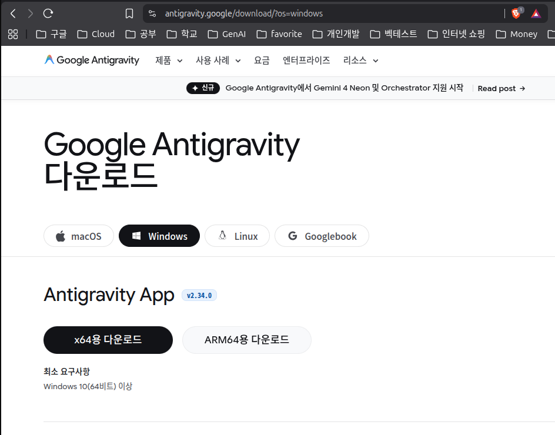
툴체인 : AGENTS.md · Skills Architecture
에이전트의 성능은 모델 자체의 파라미터 크기보다, 에이전트가 쥐고 있는 사규(AGENTS.md)와 절차 기억(Skills)의 정교함에서 결정됩니다.
매 턴 주입되는 헌법 문서부터 ui-* 네이밍 전략, SKILL.md와 REFERENCE.md의 2단계 문서 설계학을 살펴봅니다.
Stateless LLM의 본질과 Every-turn 컨텍스트 주입
LLM은 이전 대화를 스스로 기억하지 못하는 완전한 상태 비저장(Stateless) 엔진입니다. 매 턴마다 외부 애플리케이션 계층이 헌법·규칙·이력을 주입해야 합니다.
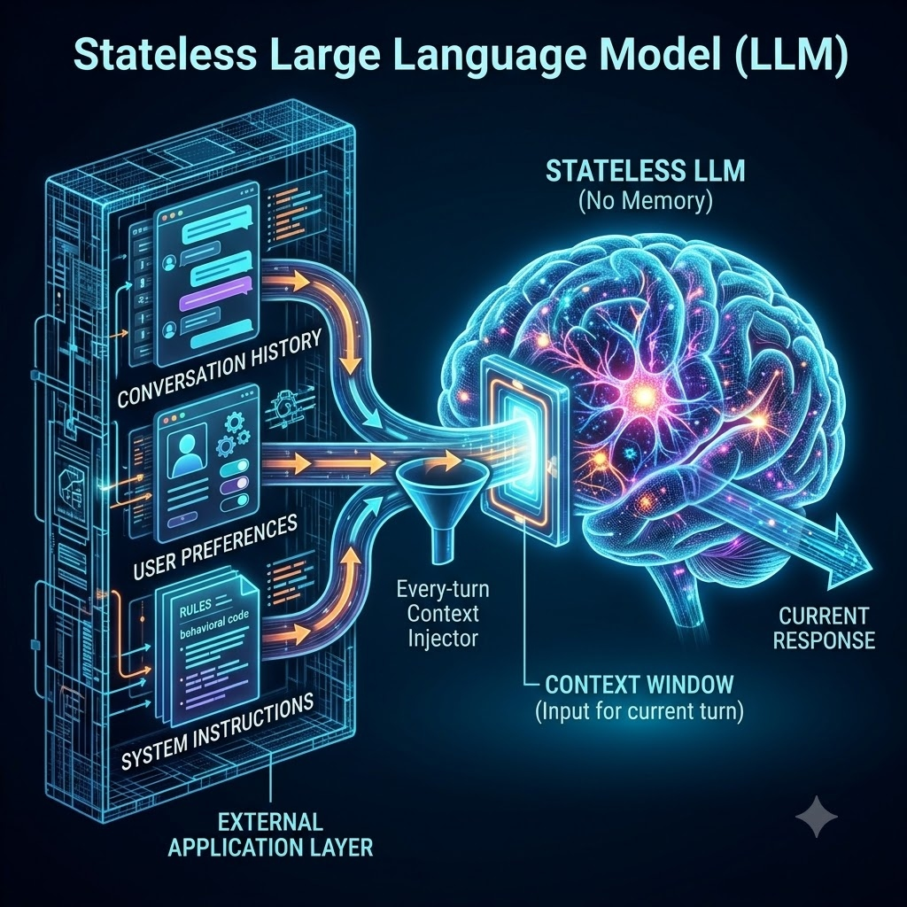
에이전트의 '기억'은 모델의 지능이 아닌 툴체인의 인젝션 결과
LLM 가중치(Weights)는 요청 간 상태를 전혀 유지하지 못합니다. 이전 턴을 기억하는 것처럼 보이는 것은 매 요청마다 전체 맥락을 새로 전달하기 때문입니다.
• System Instructions: 최상위 헌법(AGENTS.md)과 행동 강령(RULES)
• User Preferences & History: 도메인 설정, 이전 대화 및 실행 결과 기록
에이전트 런타임(Claude Code, Antigravity 등)은 매 턴마다 분산된 자산들을 '단 하나의 Context Window'로 합성하여 전송합니다.
토큰의 실체 : 1개 빈 문서에 조립되는 5대 컨텍스트 파이프라인
LLM은 이전 대화를 스스로 기억하지 못하는 완전한 상태 비저장(Stateless) 엔진입니다. 매 턴마다 '단 하나의 빈 문서'에 헌법, 규칙, 스킬, 압축 이력, 질문이 실시간으로 조립되어 API로 전송됩니다.
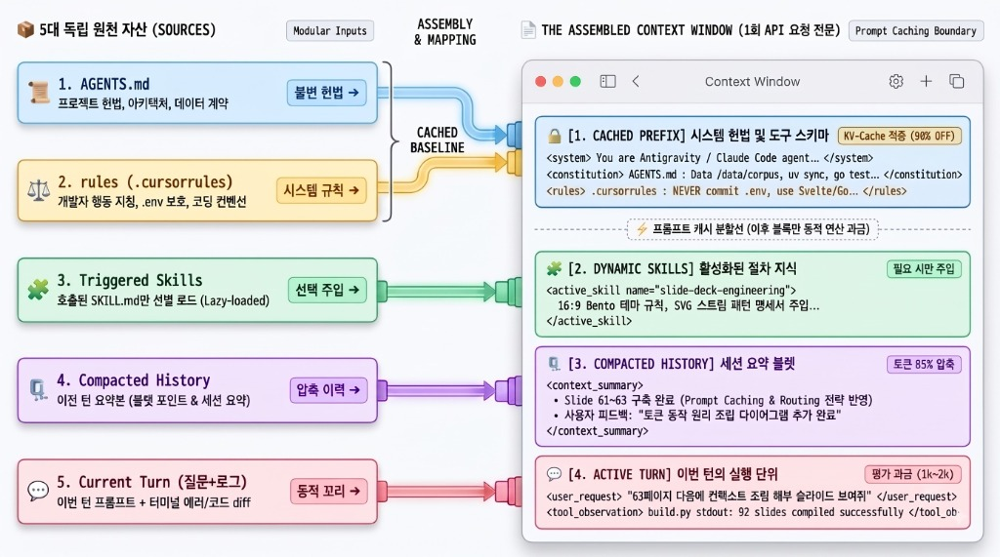
AGENTS.md : 매 턴(Every-turn) 주입되는 프로젝트 헌법
매번 대화창에 장황한 지시를 복사해 넣지 마십시오. 루트의 AGENTS.md는 에이전트와 주고받는 모든 턴(Turn)마다 최상단에 자동 주입되는 단일 진실 공급원(SSOT)입니다.
- 문서 역할:
AGENTS(공통) ·INTENT·PLAN·PROJECT.md - 컨텍스트 로드 순서: 헌법 ➔ INTENT/PLAN/PROJECT ➔ 스킬 ➔ 레슨 ➔ 소스
- 공통 운영 수칙: 모호하면 Grill-me,
.env격리, 파괴 명령(rm -rf) 금지 - 스킬 · 선택 규칙:
data-analytics-*,ui-*,ponytail,graphify색인
PROJECT.md, 공통은 AGENTS.md 분리. 헌법 ➔ INTENT ➔ PLAN ➔ 스킬 5단계 엄격 로딩.
.env 시크릿 커밋 금지, rm -rf / DROP TABLE 파괴 명령 절대 금지.
.cursor/skills/ flat 색인: data-analytics-*, db-*, ui-*, ops-*, graphify.
ponytail 등). 세션 변경 시 PLAN.md 이어받기 & LESSON_AND_LEARN 4줄 기록.
ln -s AGENTS.md CLAUDE.md 로 어떤 툴에서도 동일 사규 유지
Zero Discrepancy
프로젝트 특화(스택·데이터·포트·게이트 커맨드)는 PROJECT.md에 둔다. 모호하면 코딩 전에 역질문한다.
| 문서 | 역할 |
|---|---|
AGENTS.md |
공통 규칙, 컨텍스트 로드, 스킬 인덱스 (본 문서) |
INTENT.md |
왜 / 누구 / 수락 기준 / 비목표 (Scope & Acceptance Criteria) |
PLAN.md |
세션 체크리스트 · 진행 상태 ([NEW]/[MODIFY]/[DELETE]) |
PROJECT.md |
미션 · 기술 스택 · 경로 · 파이프라인 · 데이터 계약 · 품질 게이트 |
LESSON_AND_LEARN.md |
시행착오 및 재발 방지 장부 (증상 / 원인 / 해결 / 교훈 4줄 포맷) |
ADR.md / ROADMAP.md |
있으면 아키텍처 결정 · 로드맵 (없으면 억지로 만들지 않음) |
👉 절차 · 단계 실행은 .cursor/skills/가 SSOT다. CLAUDE.md는 만들지 않는다 (AGENTS와 중복).
- 요구가 모호하면 구현하지 말고 Grill-me한다.
- 커밋 · 푸시는 사용자 요청 시에만 수행한다.
.env및 시크릿을 절대 커밋하지 않는다.rm -rf,DROP TABLE / DROP DATABASE등 파괴 명령은 명시 요청 없이 금지.- 프로젝트 품질 게이트 커맨드는
PROJECT.md를 따른다. - 새 스킬 · 에이전트 · 운영 규칙이 생기면
harness-agents-md기준으로 본 문서를 갱신한다.
구현 전 3~5개만 묻는다.
예: 어느 파이프라인/모듈 단계인지, 어느 경로·산출물을 건드리는지, 새 라우트/테이블/문서인지, 범위 밖 요청인지.
| Prefix | Skills |
|---|---|
data-analytics-* |
source-tree, eda, qc, dimreduce-cluster, markers, celltype, export |
db-* |
duckdb-schema, ingest-h5ad, query-patterns |
ui-* |
echarts, methods-explain, chrome, astro-app, design-tokens, color-system, typography, layout-grid, viz-eda, viz-qc, viz-umap, viz-dotplot, viz-violin |
ops-* |
pipeline-orchestration |
| (agent style) | ponytail, ponytail-audit, ponytail-debt, ponytail-gain, ponytail-help, ponytail-review, i-have-adhd |
| (knowledge graph) | graphify |
| 상황 | 읽을 곳 |
|---|---|
| 폴더 추가 · 경로 · 소유권 | data-analytics-source-tree |
| 파이프라인 단계 순서 | ops-pipeline-orchestration + PROJECT.md |
| 웨어하우스 스키마 · 쿼리 | db-* |
| 차트 · 페이지 · 크롬 | ui-* |
| 스택 · 데이터 계약 · 로컬 URL · 게이트 | PROJECT.md |
| 최소 변경 · YAGNI | ponytail (+ audit/review/debt/gain/help) |
| ADHD-friendly 출력 (액션 먼저) | i-have-adhd |
| 코드베이스 지식 그래프 · 경로 질의 | graphify (/graphify .로 빌드) |
세션이 바뀌면 PLAN.md의 미완료 체크부터 이어간다.
LESSON_AND_LEARN.md에 증상 / 원인 / 해결 / 교훈 4줄 포맷으로 즉시 추가.Skills 디렉토리 구조 & 네이밍 규칙의 미학
스킬은 단순한 메모장이 아닙니다. 에이전트가 사용자의 작업 의도(Intent)를 감지하고 스스로 도구를 꺼내 들게 만드는 의도 기반 라우팅 시스템입니다.
.cursor/skills ↔ .opencode/skills ↔ .agents/skills 로 연결하면 어떤 툴에서도 단일 스킬 팩이 그대로 작동합니다.
에이전트는 사용자의 프롬프트에서 키워드를 파싱하여 매칭되는 스킬을 선택합니다. 폴더 이름과 스킬 이름에 명확한 도메인 접두사(Prefix)를 붙여야 에이전트가 혼란 없이 단번에 해당 스킬을 인지합니다.
ui-echarts, ui-viz-umap, ui-viz-qc, ui-methods-explain→ UI 요청 시 백엔드 ML이나 DB 쿼리가 끼어들지 않고 ECharts 라이브러리 및 라이트 테마 토큰만 활성화.
db-duckdb-schema, data-analytics-qc, data-analytics-dimreduce-cluster→ DuckDB 테이블 스키마 계약 및 Seurat HVG 2000, Leiden igraph 등 단일세포 전사체 분석 표준 자동 주입.
ops-pipeline-orchestration, deployment-operations→ 전체 7단계 파이프라인 순차 실행 및
import pandas 차단 게이트, Astro 빌드 검증 가동.
ui-* 프리픽스는 단순 정리가 아니라 AI 인지 라우팅의 핵심 지도입니다.
문서 설계학 : SKILL.md vs REFERENCE.md 분리
모든 규칙을 하나의 파일에 다 넣으면 토큰이 폭발하고 인지 부하가 생깁니다. 1단계 경량 실행 규칙과 2단계 심층 레퍼런스로 계층화해야 합니다.
에이전트가 스킬을 감지하는 순간 즉각 컨텍스트에 로드되는 핵심 강령입니다. 50~100줄 이내로 핵심 요약과 강제 사규만 기술합니다.
name과 description이 에이전트의 트리거 지표
수백 줄의 API 명세, 색상표, 복잡한 DB 스키마, 체크리스트를 담는 외장 참고 도서관입니다. 에이전트가 view_file로 필요할 때만 열람합니다. (※ 각 파일명을 클릭하면 실제 예제 확인)
에이전트가 프론트엔드 UI를 작성할 때 색상, 여백, 폰트 스케일을 임의로 만들지 못하도록 단일 진실 공급원으로 강제하는 명세입니다.
#0284C7 (Tailwind sky-600) · CTA, Accent, Active State#F8FAFC (slate-50) · Main Screen Background#FFFFFF · Bento Grid Elevation Tile#E2E8F0 (slate-200) · Clean Grid Dividers#E11D48 (rose-600) · Destructive Guard에이전트가 어떤 빌드 도구나 검증 명령어를 호출해야 할지 즉각 복사/실행할 수 있는 명령어 집합입니다.
에이전트가 "배포 완료되었습니다"라고 보고하기 전, 스스로 통과해야 하는 10가지 필수 검증 체크리스트입니다.
.env 및 API 토큰이 Git에 커밋되지 않았는가? (gitleaks 통과)
/data/corpus 절대경로 외 임의의 로컬/상대경로 참조가 없는가?
go test -race 실행 시 0 Warning 통과
에이전트가 추천·검색 알고리즘을 코딩할 때 임의로 가중치를 변경하지 않도록 수식과 시간 감쇠 상수를 명시한 문서입니다.
α = 0.65 : 벡터 임베딩 유사도 반영 가중치λ = 0.048 : 반감기 14.4시간 기준 시간 감쇠 계수 (Time-decay factor)Δt : 현재 시각과 문서 생성 시각의 차이 (단위: Hours)K = 250데이터베이스 테이블 컬럼명, 외래키, 인덱스 및 테넌트 데이터 격리를 위한 RLS 보안 정책 SSoT 문서입니다.
id UUID PRIMARY KEY DEFAULT gen_random_uuid(),
workspace_id UUID NOT NULL REFERENCES workspaces(id),
agent_role VARCHAR(64) NOT NULL,
prompt_tokens INTEGER DEFAULT 0,
created_at TIMESTAMPTZ DEFAULT clock_timestamp()
);
CREATE POLICY tenant_isolation ON agent_execution_logs
USING (workspace_id = current_setting('app.workspace_id')::uuid);
마이크로서비스 간 통신에 쓰이는 gRPC Proto 정의와 외부 연동용 REST JSON 스키마를 고정하는 문서입니다.
service RecommendationEngine {
rpc StreamCandidates(CandidateQuery) returns (CandidateResult);
rpc HealthCheck(PingRequest) returns (PongResponse);
}
Response 200: { "status": "success", "latency_ms": 8.4, "items": [...] }
Response 429: { "error": "RATE_LIMIT_EXCEEDED", "retry_after_sec": 3 }
view_file로 읽어 토큰을 절약합니다.
SKILL.md로 경량 라우팅하고, 대용량 지식은 REFERENCE.md로 외주화하여 토큰을 절약하십시오.
Rules 체계와 Grill-me : 맹종을 넘어선 능동적 정렬
사용자의 모호한 지시를 그대로 코딩하면 90% 확률로 엉뚱한 결과가 나옵니다. 계층형 Rules로 제약을 걸고, /grill-me로 에이전트가 역질문하게 만들어야 합니다.
스킬이 "어떻게 작업할 것인가(How)"라면, 룰은 "무엇을 절대 넘지 말아야 하는가(Constraint)"입니다.
data/raw/ 원본 h5ad 수정 절대 금지, backend/ 내 import pandas 전면 금지.
always_on(무조건 주입)과 특정 파일 수정 시만 활성화되는 glob_trigger로 토큰 최적화.
바이브 코딩의 가장 큰 위험은 에이전트가 인간의 불완전한 프롬프트에 "네, 알겠습니다!"라며 섣불리 코드를 500줄 짜버리는 '예스맨 증후군(Yes-Man Syndrome)'입니다.
Rule: "설계 결정을 내리기 전 모호한 점이 있다면 즉시 ask_question 도구로 역질문할 것."Slash Command: /grill-me 호출 시 기획 인터뷰 모드로 진입하여 3~5개 엣지 케이스 확인.Lifecycle Hooks : 인간의 눈을 대신하는 자동 검증기
에이전트가 도구를 호출하거나 실행을 종료할 때, 백그라운드에서 쉘 스크립트를 가로채 실행하는 이벤트 주도형 하네스(Hook)입니다.
rm -rf, git push --force, DB 드롭 같은 파괴적 커맨드 감지 시 도구 실행 즉시 차단!
ruff format이나 prettier를 백그라운드 실행하여 코드 스타일 일관성 보장.
루트 또는 .agents/hooks.json에 이벤트 핸들러를 정의하면 에이전트 프레임워크가 런타임에 이를 자동 감지하여 인터셉트합니다.
공통 모듈과 프로젝트 특화 : AGENTS.md vs PROJECT.md
모든 프로젝트에 똑같은 룰을 복붙하면 유지보수가 불가능해집니다. 전사 공통 스킬과 도메인 특화 규칙을 깔끔히 분리해야 합니다.
회사나 팀의 모든 레포지토리에서 100% 동일하게 공유되는 표준 거버넌스 문서와 범용 스킬 팩입니다.
• 중앙 사규 저장소(
harness-collection)에서 Git Submodule/심볼릭 링크로 연결.
uiux-governance: 사내 공통 디자인 시스템/Tailwind 색상 토큰.•
deployment-operations: podman-compose, CI/CD 공통 파이프라인.
해당 레포지토리 고유의 비즈니스 도메인, 데이터 스키마, 특화 파이프라인만 격리하여 기술하는 전용 문서입니다.
• 스택 & 데이터 계약: Python 3.12 (uv), DuckDB(SSOT), Astro 5 (import pandas 금지),
data/raw/pbmc3k_raw.h5ad
db-duckdb-schema: 2,700 세포 × 32,738 유전자 DuckDB 웨어하우스 DDL.•
ops-pipeline-orchestration: ingest ➔ eda ➔ qc ➔ dimreduce ➔ markers 7단계 엄격 순서.
이 실습 저장소의 특화 SSOT다. 공통 규칙은 AGENTS.md.
| Name | pbmc3k-vibe-lab |
| Brand | ChaLab |
| Domain | scRNA-seq / PBMC clustering |
| Root | /mnt/data/.../src/ui |
data/raw/에 있음).| 층 | 기술 | 규칙 |
|---|---|---|
| BE | Python 3.12 + .venv |
uv로 패키지 설치 |
| Warehouse | DuckDB (주력) | 테이블 · 집계 · 내보내기의 SSOT |
| Frame | Polars (보조) | SQL로 어색한 변환만. import pandas 금지 |
| Graph ML | scanpy / numpy / scipy / igraph | PCA · neighbors · UMAP · Leiden · rank_genes_groups만 |
| FE | Astro 5 | 모든 단계 시각화는 Astro 페이지 / 컴포넌트 |
| Charts | Apache ECharts | echarts-setup.ts + ui-viz-*. 손수 SVG/타 차트 라이브러리 금지 |
| Methods | /methods | HTML 보드 + 단계 스키매틱 + 세포 퍼널 + 실행 타임라인. 웹 카피에 C4/스택명 금지 |
| UI | light background 기본 | .cursor/skills/ui-* 준수 |
pandas, Jupyter를 최종 산출물로 사용, matplotlib/seaborn PNG · 손수 SVG를 Astro 차트 대체로 사용(디버그 PNG는 results/만 허용).
data/raw/ # 읽기 전용 원본 (h5ad)
data/warehouse/ # DuckDB 파일만. BE 소유
backend/ # Python 파이프라인 단계 모듈
frontend/ # Astro 앱. 시각화 SSOT
frontend/public/data/ # DuckDB export (생성물)
results/ # 요약 md/json (행렬 금지)
.cursor/skills/ # 절차 기억 SSOT
상세 트리는 스킬 data-analytics-source-tree를 읽는다.
- db-ingest-h5ad — h5ad ➔ DuckDB
- data-analytics-eda — 기본 EDA + ui-viz-eda (/eda)
- data-analytics-qc — QC 필터 + ui-viz-qc
- data-analytics-dimreduce-cluster — PCA/UMAP/Leiden + ui-viz-umap
- data-analytics-markers — DEG + ui-viz-dotplot / ui-viz-violin
- data-analytics-celltype — 마커 기반 타입 추론
- data-analytics-export — Astro용 아티팩트 갱신
👉 앞 단계 산출물 없이 뒷 단계를 구현하지 않는다. 오케스트레이션: ops-pipeline-orchestration.
.venv (CPython 3.12), 패키지 관리: uvfrontend/, pin astro@5.16.6; Node 22.22 OK)data/warehouse/pbmc3k.duckdbecharts). 차트 색은 ui-design-tokens CSS 변수만 허용.data/raw/pbmc3k_raw.h5ad (2700 × 32738, raw count, hg19)db-duckdb-schemarandom_state=0 / sc.settings.seed = 0pct_counts_mt < 5 AND 200 <= n_genes_by_counts < 2500http://127.0.0.1:8899 (Footer Brand: ChaLab)seed = 0
mt gene prefix = MT-
keep cells: pct_counts_mt < 5 AND 200 <= n_genes_by_counts < 2500
filter_genes min_cells = 3
normalize target_sum = 1e4
HVG = seurat top 2000
PCA n_comps = 50; neighbors n_neighbors=15 n_pcs=30
Leiden resolution=1.0 flavor=igraph n_iterations=2 directed=False
rank_genes_groups method=wilcoxon use_raw=True.venv/bin/python -c "import pandas" # 반드시 ImportError
.venv/bin/ruff check backend/
cd frontend && npm run build세션 변경과 망각을 이기는 3대 문서 아키텍처
새 대화창을 열 때마다 에이전트의 기억이 초기화되는 '컨텍스트 절벽(Context Cliff)'을 3대 상태 문서로 영구 극복합니다. (※ 각 파일명을 클릭하면 실전 예제 확인)
동일한 버그로 에이전트가 삽질하고 토큰을 날리는 것을 방지하는 트러블슈팅 오답 노트입니다.
대화 세션이 끊겨도 에이전트가 "내가 어디까지 작업했는지" 즉시 복원하는 진행 상태 동기화 장치입니다.
"왜 pandas 대신 DuckDB를 주력 웨어하우스로 삼았는가?"와 같은 근본적인 기술적 의사결정 의도를 영속화합니다.
에이전트가 문제를 해결한 후 원인과 해법을 기록하여, 다음 세션에서 동일한 버그로 토큰을 낭비하지 않도록 방지하는 오답 노트입니다.
echarts@5.6.0 + frontend/src/lib/echarts-setup.ts; violin은 custom seriesui-echarts가 차트 SSoT. 새 플롯도 ECharts만 사용.sc.tl.leiden이 leidenalg 미설치로 실패하거나 느림 경고flavor="igraph", n_iterations=2, directed=False + igraph 패키지data-analytics-dimreduce-cluster 파라미터 그대로 준수..obs/.var가 pandas DataFrame이라 변환 유혹import pandas 금지db-query-patterns의 "AnnData → DuckDB 브릿지"만 사용.대화창을 닫거나 세션이 만료되어도 에이전트가 "내가 어디까지 코딩했는지" 1초 만에 파악할 수 있는 작업 체크리스트입니다.
backend/ingest : h5ad → DuckDB (2,700 cells / 32,738 genes, 2,286,884 nnz)
backend/qc : mt%/n_genes 필터, /qc 페이지 (2700→2638 cells 통과)
에이전트가 눈앞의 단기 작업에 매몰되어 전체 시스템의 중장기 설계 방향성을 훼손하지 않도록 가이드하는 로드맵 문서입니다.
• pandas 금지 및 품질 검증 게이트(ruff + npm run build) 통과
• Parquet 컬럼 스토리지 파티셔닝 기반 다중 샘플 통합 쿼리
• 멀티 에이전트 마커 기반 세포 상태 자동 주석 및 논문 인용 리포트 생성
"왜 시스템이 이렇게 만들어졌는가"를 정의하여, 에이전트가 리팩토링 중 핵심 철학을 임의로 훼손하거나 불필요한 복잡성을 도입하는 것을 차단합니다.
data/raw/pbmc3k_raw.h5ad를 재다운로드 없이 DuckDB로 적재한다.import pandas가 코드베이스에 없다. 표 연산은 DuckDB(+ Polars 보조)만 쓴다.주요 기술적 선택의 배경, 대안 평가, 채택 이유와 결과를 공식 문서로 박제하여 미래의 개발자와 에이전트가 뒤엎지 못하게 합니다.
pbmc3k.duckdb)로 228만 카운트 집계 0.05초 달성.- 제약: AnnData 객체와의 경계에서
db-query-patterns 브릿지 패턴을 반드시 준수해야 함.
중앙 집중형 LLM-Wiki : 3계층 정제 & Multi-Depth 아키텍처
단순 폴더 트리 구조가 아닙니다. Raw(원천 자료) ➔ Schema(정제 규칙) ➔ Wiki(영속적 개념/결정/스킬)로 지식을 컴파일하여 전 프로젝트가 공유하는 고차원 인지 시스템입니다.
/raw/ 논문, scRNA-seq 데이터 명세, 벤더 API 문서, 회의록, 장애 로그 (AI 읽기 전용)
AGENTS.md · 템플릿(entity, decision) ➔ AI에게 위키 작성 규칙 강제
스킬이 비대해져 생기는 상충(Conflict)과 토큰 낭비를 막기 위해, 위키는 인덱스 · 엔티티 · 의사결정 · 원자 스킬로 다층 분할(Multi-Depth)됩니다.
├── 📑 LESSON_AND_LEARN.md (전사 공통 오답노트 · 자가 치유)
├── 📁 entities/ ➔ 핵심 개념 · 패턴 ([[duckdb-warehouse]], [[scrna-seq-pipeline]])
├── 📁 decisions/ ➔ 아키텍처 결정 · 시행착오 ([[echarts-custom-violin]], [[leiden-igraph]])
└── 📁 _templates/ ➔ 새 지식 인제스트용 표준 양식 (entity, decision)
├── 📁 ops-pipeline-orchestration/ (오케스트레이션)
└── 📁 db-duckdb-schema/ · 📁 data-analytics-dimreduce-cluster/ (분석 파이프라인)
index.md로 필요한 페이지만 열람 ➔ 상충 원천 차단 ➔ 토큰 절감 극대화.
wiki-management): 새 자료가 오면 AI가 스스로 위키 문서를 작성하고 index.md에 링크를 거는 자율 루프 가동.
실전 팁 & 바로바로 실습 : 워크스페이스 문서 세팅 & 사규 심기
에이전트가 작업 전 스스로 읽을 5대 필수 추적 문서를 터미널에서 1초 만에 세팅하고, 나만의 스킬(SKILL.md)을 만들어 AI가 스스로 지침을 따르는지 관전합니다.
실전 팁 : 매번 프롬프트 복붙하지 말고 'Skill'로 구워라
.cursor/skills/ui-dashboard/에 마크다운 하나만 두면, 설명 1초도 안 해도 사규를 100% 준수합니다.
.cursor/ 폴더와 AGENTS.md는 실습 팩으로 이미 탑재되어 있으므로 제외하고, 나머지 5대 핵심 문서(LESSON, PLAN, ROADMAP, INTENT, ADR)를 기존 파일 손상 없이 안전하게 생성합니다.
for doc in LESSON_AND_LEARN.md PLAN.md ROADMAP.md INTENT.md ADR.md; do [ -f "$doc" ] || touch "$doc"; done
"LESSON_AND_LEARN.md", "PLAN.md", "ROADMAP.md", "INTENT.md", "ADR.md" | ForEach-Object { if (-not (Test-Path $_)) { New-Item $_ -ItemType File } }
for %f in (LESSON_AND_LEARN.md PLAN.md ROADMAP.md INTENT.md ADR.md) do if not exist %f type nul > %f
.cursor/skills/ui-dashboard/SKILL.md
규칙 정의
name: ui-dashboard
description: "대시보드 UI 생성 시 16:9 다크 테마와 Bento 카드를 강제한다"
---
# 규칙: 배경색은 bg-slate-950, 카드는 bg-slate-900/80 및 border-slate-800을 쓸 것.
Chapter 04 핵심 요약 : 도구와 기억의 인프라 체계
에이전트를 길들이는 비결은 프롬프트 작문술이 아닙니다. 헌법(AGENTS), 절차(Skills), 규칙(Rules), 파이프라인(Hooks), 위키(Wiki)의 5대 인프라 결합입니다.
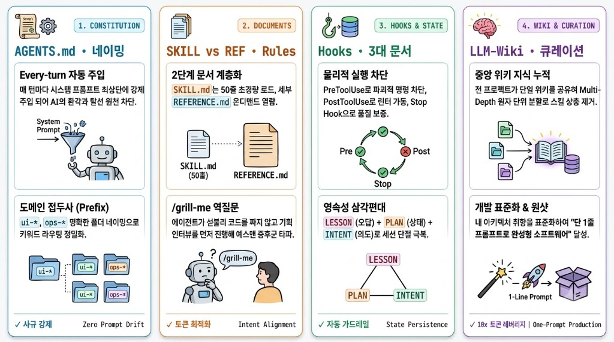
병렬화 : 혼자 코딩하는 에이전트는 느리다
단일 채팅창에서 에이전트가 프론트엔드 짜고, 백엔드 짜고, 테스트 짜는 것을 기다리다 지치셨나요?
Git Worktree 기반 멀티 에이전트 오케스트레이션을 통해, 단 하나의 Git 저장소에서 3~4명의 AI가 서로 파일을 덮어쓰지 않고 동시에 초고속 병렬 작업을 수행하는 워크플로우를 실습합니다.
AI가 코드를 치는 동안 무엇을 하고 계십니까?
바이브 코딩의 생산성 격차는 프롬프트 작문 실력이 아니라 "에이전트 병렬화 지수(Parallel Index)"에서 갈립니다.
1개의 대화창에서 AI가 타이핑하는 글자를 멍하니 지켜보는 것은 바이브 코딩에서 가장 치명적인 안티패턴입니다.
개발자는 직접 삽질하는 일꾼이 아니라, 여러 명의 AI 주니어에게 태스크를 동시 분배하고 취합하는 매니저(PM · Architect)입니다.
격리 기술의 핵심 : git worktree vs 기존 브랜치 전환
하나의 레포지토리에서 여러 브랜치를 서로 다른 물리 디렉터리로 동시 체크아웃하여 에이전트 간 간섭(Race Condition)을 0%로 박멸합니다.
동일한 로컬 작업 폴더에서 2개 이상의 에이전트를 돌리면 발생하는 참사:
node_modules, target/, .git/index.lock 충돌로 빌드 즉각 크래시.
다중 세션 연속성 & 5대 문서 기반 모듈 분할 동시 개발
세션이 끊기거나 교체되어도 5대 상태 문서(ROADMAP · INTENT · ADR · PLAN · LESSON)로 맥락을 100% 즉시 계승하며, 단일 프로젝트를 4개 모듈로 쪼개어 동시 병렬 완성합니다.
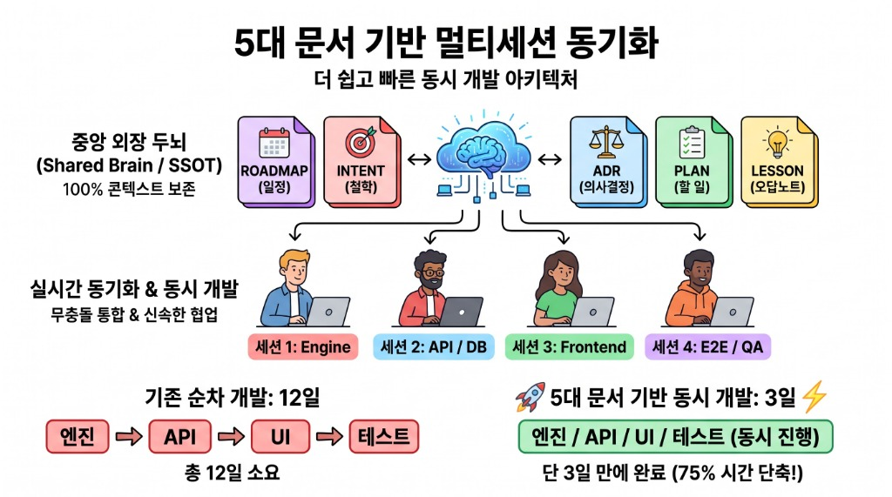
실전 워크플로 : 1인 4 에이전트 파이프라인 (The Async Loop)
실전! 1시간 만에 4개 기능 배포하기 : 작업 분할(Divide) ➔ 독립 위임(Delegate) ➔ 컴파일/테스트 자가 검증 ➔ 최종 머지
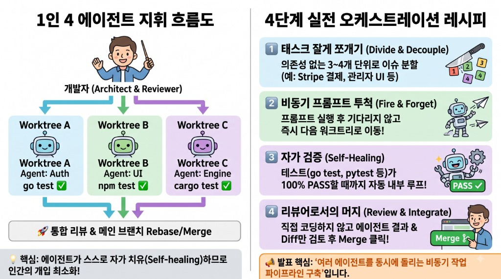
실전 팁 & 바로바로 실습 : Worktree로 2명 동시 지휘
실전 팁 : Worktree + 서브에이전트 법칙
➔ 인간의 시간이 AI 대기 시간에 묶여 피로도 급증.
Workspace: 'branch'로 격리 작업실을 자동 생성하도록 정의되어 있습니다.
실습 : 1초 만에 격리 작업실 생성하고 분신 띄우기
../wt-auth 폴더에 완벽히 격리된 작업실이 생성됨Chapter 05 핵심 요약 : 개발 생산성을 극대화하는 4가지 혁신
개발자의 정체성은 단순 '코더'가 아닙니다. 비동기 인간 · git worktree · DevContainer · 모듈 병렬화 파이프라인으로 4배의 생산성을 달성하십시오.
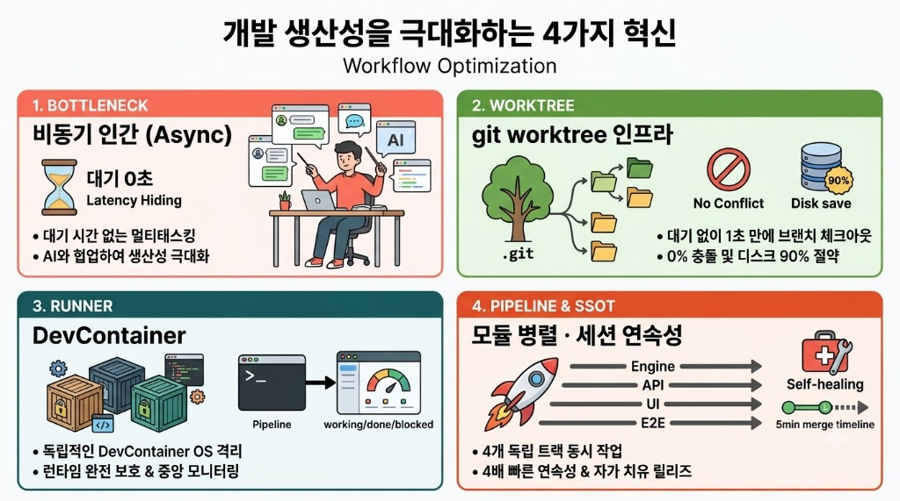
비용 통제 : 토큰 요금 80~90% 절감의 미학
바이브 코딩으로 신나게 프로토타입을 만들다가 월말에 수백 달러의 API 요금 청구서를 맞고 좌절하는 경우가 많습니다.
단순한 프롬프트 단축을 넘어, 프롬프트 캐싱 · 모델 라우팅 · caveman · ponytail · AST 스켈레톤 · 불렛 압축 · 원자적 소스트리로 무장하여 똑같은 퀄리티의 코드를 1/10 비용으로 뽑아내는 토큰 엔지니어링 5대 방어선을 구축합니다.
Prompt Caching & 계층형 모델 라우팅
컨텍스트 구조를 '고정 캐시 헤더 + 동적 바디'로 재설계하고, '두뇌(Pro) vs 손발(Flash)' 모델을 분리하여 비용을 수직 낙하시킵니다.
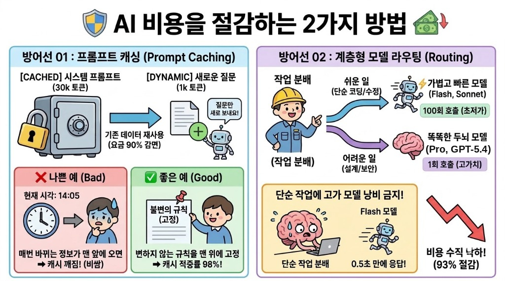
출력 다이어트 & 과잉 방지 : caveman & ponytail 스킬
AI의 공손한 미사여구를 쳐내는 caveman(출력 70% 삭감)과 주니어식 과잉 엔지니어링을 막는 ponytail(게으른 시니어 사다리)로 토큰 누수를 원천 봉쇄합니다.
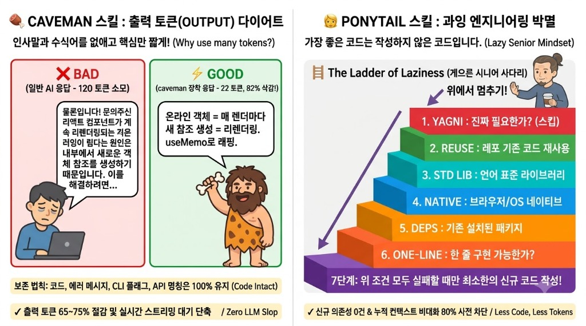
구문 기반 컨텍스트 압축 : AST 구조 & Tree-sitter 스켈레톤
파일 전체(2,000줄)를 무식하게 읽히지 마십시오. AST(추상 구문 트리)로 함수 시그니처와 인터페이스만 추출하여 토큰을 98% 압축(10k ➔ 200 토큰)합니다.
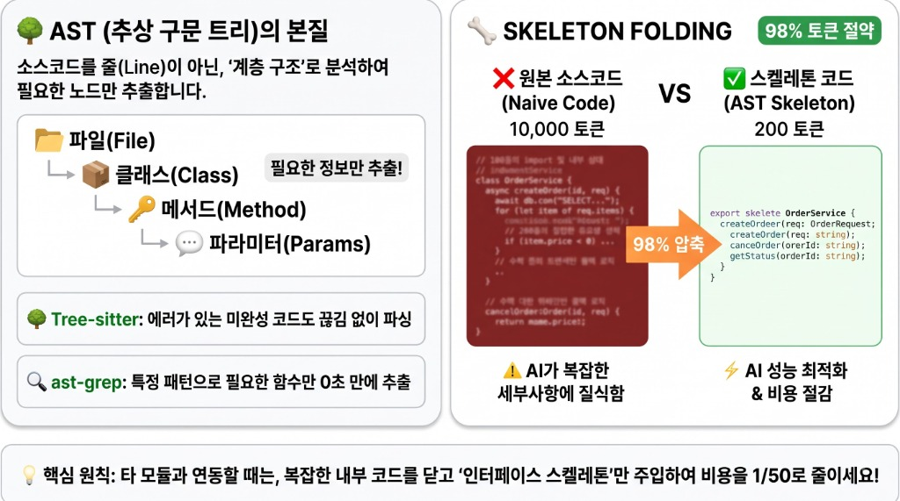
RTK : AI 에이전트를 위한 최적화 및 제어 레이어
설치 즉시 최대 90% 출력 감소(<25ms 초고속), 파이프라인 기반 20.2% 비용 절감, 그리고 전사 에이전트 보안·시크릿 통합 게이트웨이를 제공합니다.
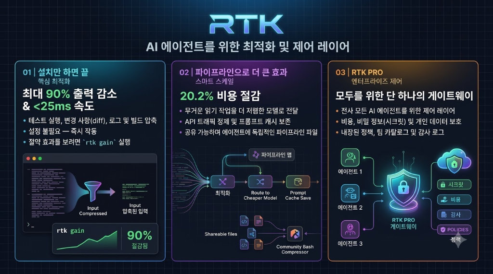
멀티턴 대화 연속성 : Bullet Point 세션 압축 & 체크포인팅
대화가 30턴 넘어가면 과거 대화 전체가 매 턴마다 누적 과금됩니다. 대화 히스토리를 5~7개 고밀도 불렛 포인트로 압축하여 이차 곡선형 토큰 폭증을 영구 차단합니다.
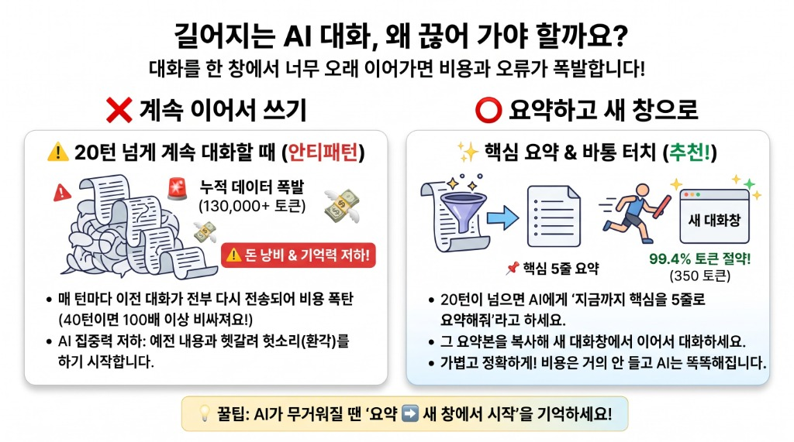
아키텍처 단위 토큰 다이어트 : 소스트리 표준화 & 원자적 함수 분할
하나의 파일에 1,500줄을 몰아넣지 마십시오. 200줄 이하 원자적 파일 분할과 30줄 순수 함수 표준화로 Diff 편집 토큰을 90% 절감합니다.
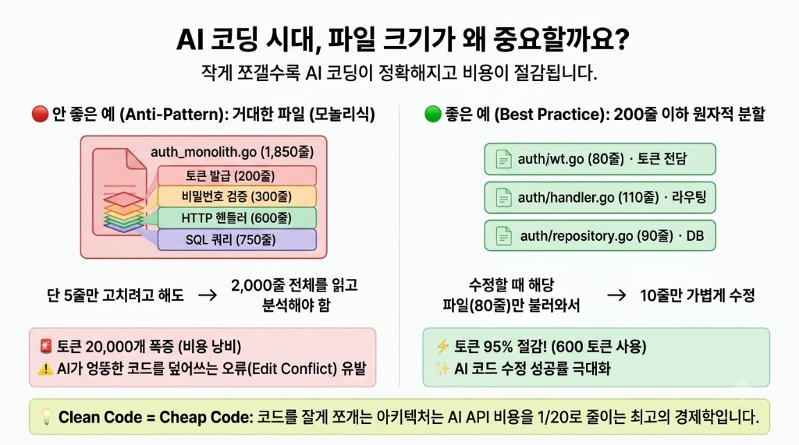
실전 토큰 다이어트 툴킷 : Ripgrep & 에러 로그 Truncation
파일을 다 열어보지 말고 Grep으로 표적 타격하고, 실패 시 로그의 머리(Head)와 꼬리(Tail)만 주입하여 토큰 누수를 원천 봉쇄합니다.
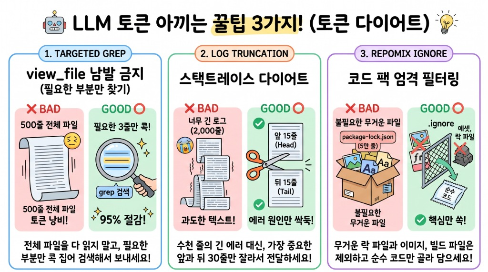
실전 팁 & 바로바로 실습 : caveman 장착 & RTK · Graphify 설치
실전 팁 : 미사여구 제거와 스켈레톤 습관
caveman 모드를 기본 탑재하고, 파일 전체 대신 타입 정의와 인터페이스만 추출하여 전달합니다.
실습 : 1분 만에 토큰 다이어트 도구 설치 & 세팅
👉 Claude Code, Cursor, Antigravity 채팅창에 위 프롬프트를 그대로 입력하면, 에이전트가 리포지토리를 직접 클론·분석하여 RTK(출력 90% 압축)와 Graphify(코드 지식 그래프)를 자동으로 환경에 빌드·구성합니다.
Chapter 06 핵심 요약 : 더 가볍고 빠른 AI를 위한 5단계 최적화
단순한 절약이 아닙니다. 캐싱 · 라우팅 · 가벼운 말씨 · 구문 뼈대 추리기 · 대화 압축 · 원자적 분할로 무제한 개발 속도를 확보하십시오.
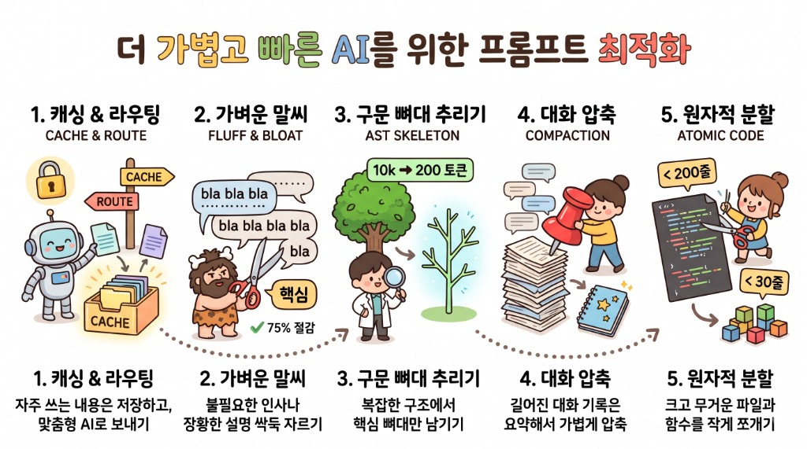
런칭 : 인증 · 결제 · 거버넌스 · 배포 · CI/CD의 완성
AI가 코드를 완성했다고 프로젝트가 끝난 것이 아닙니다. 진짜 엔지니어링은 유저를 받고(SNS 로그인), 결제를 붙이며(Toss · PayPal), 인터페이스를 통제하고(UI/UX Governance SSoT), 안정적으로 서빙하며(Vercel · Cloud Run), 변경 사항을 자동 배포(GitHub Actions)할 수 있을 때 완성됩니다.
0원으로 시작하여 상용 프로덕션 수준까지 확장 가능한 실전 런칭 아키텍처를 마스터합니다.
SNS 로그인 & BaaS 인증 : 왜 Supabase인가?
바이브 코딩 시 "로그인 백엔드 직접 구현"은 최악의 안티패턴입니다. 검증된 BaaS로 5분 만에 OAuth를 붙이고 RLS로 격리합니다.
AI에게 "JWT 로그인 백엔드 짜줘"라고 요청하면 겉만 돌아가는 위험천만한 코드가 생성됩니다.
Google, Kakao, GitHub OAuth를 클릭 한 번으로 활성화하고, 프론트엔드와 PostgreSQL RLS를 직결합니다.
auth.uid() = user_id 격리
supabase.auth.onAuthStateChange((event, session) => ...)로 실시간 상태 동기화
Zero Polling
결제 연동 실전 : Toss Payments & PayPal
국내 간편결제(Toss)와 글로벌 결제(PayPal)의 3단계 승인 아키텍처를 이해하고, 법적 필수 표기사항과 보안 원칙을 준수합니다.
renderPaymentMethods() 한 줄로 모든 카드사 및 간편결제 UI 자동 렌더링.
paymentKey, orderId, amount를 백엔드에서 Toss API에 POST 승인 요청.
- • 약관 링크: 이용약관 · 개인정보처리방침 · 환불/취소 정책
- • 사업자 정보: 상호명, 대표자명, 사업자번호, 통신판매업 신고번호, 주소
createOrder) ➔ 유저 결제 승인 ➔ 서버에서 캡처(captureOrder)로 안전 완료.
paymentKey만 저장 (PCI-DSS 준수).
프로덕션 UI/UX 거버넌스 : AI의 프론트엔드 난개발을 통제하는 SSoT
AI 에이전트에게 프론트엔드 개발을 맡길 때 발생하는 디자인 파편화와 화면 난개발을 차단하는 Single Source of Truth (SSoT) 표준 체계.
연결/정상 상태는 긴 텍스트 배지 나열 대신 컬러 아이콘 칩 + 툴팁으로 간결화.
필드 아래 별도 버튼 행 금지. 인풋/셀렉트 우측에 복사·새로고침 인라인 아이콘 배치.
설정 완료 후 거대한 입력 폼 방치 금지. Accordion 요약 카드로 자동 전환.
창 전체 스크롤 금지. h-screen overflow-hidden 셸 고정 후 패널 내부 스크롤.
장황한 상단 배너 금지. 헤더는 48~56px 단일 행으로 최소화하여 업무 공간 극대화.
미완성 상태 클릭 후 alert 금지. 필수 조건 미충족 시 버튼 disabled + 사유 툴팁 제공.
새로고침 시 초기화 금지. 최근 조회, 탭, 입력값은 로컬/세션 스토리지에 복원 유지.
불필요한 영어 남발("Pending", "Success") 금지. "대기 중", "정상 연결" 등 한국어 표준.
로딩 0.5초 동안 "데이터 없음" 문구 깜빡임 방지. Skeleton UI 또는 로딩 가드 적용.
드롭다운/팝오버는 문서 외부 영역 클릭 시 자동으로 닫히는 리스너 필수 구현.
.agents/skills/uiux-governance/SKILL.md를 에이전트에게 주입하면 프론트엔드 UI 난개발을 100% 방지
배포 환경 3대 패러다임 : Vercel · Cloud Run · VM
"어디에 올려야 하는가?" — 프론트엔드 특화 PaaS, 서버리스 컨테이너, 전통적 가상 서버(IaaS)의 작동 원리와 차이점을 비교합니다.
Next.js · Svelte 최적화
Git 푸시 즉시 글로벌 엣지 CDN에 배포되며 브랜치별 프리뷰 URL 자동 생성.
서버리스 컨테이너
Dockerfile만 있으면 Go, Python, Rust 등 어떤 언어든 HTTP 요청 단위로 기동.
AWS EC2 · GCP · Hetzner
전용 CPU/메모리를 점유하는 완전한 가상 머신. Podman/Docker Compose로 운영.
어디에 배포하고, 어디까지 무료인가?
내 애플리케이션의 특성(정적 UI, 간헐적 API, 24시간 데몬)에 맞춰 월 0원으로 프로덕션을 운영하는 Free Tier 조합을 설계합니다.
CI/CD의 본질 & GitHub Actions 자동 배포
"내 컴퓨터에서는 잘 도는데?"를 영원히 없앱니다. Git push 한 번으로 검증(CI) ➔ 빌드 ➔ 무중단 배포(CD)가 끝나는 자동화 게이트를 구축합니다.
무료 & 가성비 CI/CD 서비스 총정리
빌드 요금 걱정 없이 1인 창업자와 바이브 코더가 무료 티어만으로 파이프라인을 구축할 수 있는 최적의 도구들을 비교합니다.
GitHub Actions
저장소 내장, 1만 개 이상의 마켓플레이스 액션으로 3분 만에 완성.
Vercel · Cloudflare
YAML 파일 없이 Git 푸시만 감지하여 빌드 · 캐싱 · 도메인 배포.
GitLab CI/CD
복잡한 다단계 의존성 제어 및 내장 컨테이너 레지스트리 제공.
Self-Hosted Runner
남는 PC나 저가 VPS를 러너 데몬으로 등록해 빌드 시간 제약 돌파.
실전 5분 실습 : 0원에서 상용 런칭까지
BaaS 인증, 결제 위젯, CI/CD 자동 배포 파이프라인을 3단계로 연결하여 실제 인터넷에 살아있는 서비스를 런칭합니다.
Supabase Auth · RLS
대시보드에서 SNS 프로바이더를 켜고 환경변수를 로컬과 Vercel에 주입합니다.
auth.users 행 자동 생성결제 위젯 · 필수 약관
토스페이먼츠 테스트 클라이언트 키를 연결하고 법적 필수 표기사항을 푸터에 배치합니다.
Git Push ➔ 라이브 서빙
GitHub Repository Settings에 시크릿을 등록하고 push하여 자동 배포를 확인합니다.
Chapter 07 핵심 요약 : 프로덕션 4대 방어선
"인증 · 결제 · 배포 · CI/CD"의 4대 기둥을 견고히 세움으로써, 1인 개발자도 글로벌 상용 서비스를 안정적으로 운영할 수 있습니다.
Supabase Auth
직접 구현을 배제하고 관리형 BaaS로 완전 격리.
auth.uid() = user_id로 DB 레벨에서 권한 격리.
Toss · PayPal · Stripe
위젯 SDK와 웹훅 기반의 안전한 3단계 수납 체계.
Vercel · Cloud Run · VM
성격별 분업(UI vs API vs 24/7 Bot) 최적화.
GitHub Actions
푸시 즉시 테스트-빌드-배포 전 과정 자동화.
./start.sh prod로 30초 내 배포.
가드레일 : 데이터 누수 방지 & 민감정보 격리
AI는 동작하는 기능을 가장 빠르게 찍어내지만, 보안 맥락(RLS 권한 검증, 시크릿 키 은닉, 공급망 신뢰)을 스스로 챙기지 못합니다.
단 한 줄의 누락으로 고객 전원의 개인정보가 노출되고, 단 한 번의 커밋 실수로 클라우드 계정이 털리는 대참사를 원천 차단하는 5중 심층 방어(Defense-in-Depth) 가드레일을 구축합니다.
"코드가 잘 도니까 안전하겠지"라는 착각이 낳은 참사
AI는 학습 데이터 속 확률 통계로 코드를 생성할 뿐, 보안 신뢰 경계(Trust Boundary)를 이해하지 못합니다.
환각 의존성 갈취 (Phantom Dependency)
LLM이 존재하지 않는 패키지 이름을 그럴듯하게 지어내면(환각률 3~30%), 해커가 해당 이름을 PyPI/npm에 선점 등록하여 악성코드를 심는 공급망 공격.
- • 특징: 오타(Typosquatting)가 아니라 AI가 지어낸 이름을 사람이 그대로 설치.
- • 대응: Lockfile 강제 및 설치 전 레지스트리 존재 검증.
외부 데이터 속 악의적 프롬프트 침투
에이전트가 외부 웹페이지, 오픈소스 README, 깃허브 Issue를 읽어들일 때, 숨겨진 지시문이 시스템 프롬프트를 덮어쓰고 명령어를 가로챕니다.
- • 본질: 데이터(Data)와 명령어(Instruction)의 경계 상실.
- • 대응: 에이전트 도구 권한 최소화 및 외부 데이터 격리.
무제한 자동 승인(Auto-Approve)의 비극
"귀찮다"는 이유로 터미널 명령 승인을 모두 끄면(YOLO 모드), AI가 버그를 고치려다 프로젝트 디렉토리 전체를 날리거나 DB를 드랍합니다.
- • 위험: 되돌릴 수 없는 파일 시스템 및 프로덕션 DB 파괴.
- • 대응: 파괴적 명령 화이트리스트 & Human-in-the-Loop.
RLS(Row Level Security) 누수 방지: 3대 치명적 함정과 방어 DDL
BaaS 환경에서는 프론트엔드가 DB에 직접 쿼리를 날립니다. 백엔드 방화벽이 없으므로 DB 자체에 방패를 씌워야 합니다.
ENABLE RLS 누락의 참사
PostgreSQL은 테이블 생성 시 RLS가 기본적으로 OFF 상태입니다. AI에게 그냥 테이블을 만들라고 하면 누락되어 anon 키로 전 고객 데이터 조회가 열립니다.
- • 결과: RLS 활성화 없이는 아무리 복잡한 정책을 써도 0% 적용.
- • 규칙: 모든 DDL 마이그레이션 끝에 ENABLE RLS 필수 강제.
SELECT만 막고 UPDATE 방치
AI는 종종 FOR SELECT 정책만 달랑 작성합니다. 이 경우 인증된 사용자가 타인의 결제 금액이나 상태를 UPDATE 해버리는 권한 상승 버그가 발생합니다.
- • USING vs CHECK: 읽기/삭제 조건(USING)과 쓰기/수정 조건(WITH CHECK) 동시 검증.
Service Role Key 프론트 번들링
AI가 RLS 권한 에러를 만나면, 원인을 해결하는 대신 모든 RLS를 우회(Bypass)하는 마스터 키인 service_role 키를 클라이언트에 주입해버립니다.
- • 규칙: 프론트엔드는 반드시
anon key+ 유저 JWT 세션으로만 접속.
ENABLE RLS와 auth.uid() = user_id 정책이 없으면 CI 파이프라인에서 커밋 거부."
시크릿 키 3중 격리 & 프론트엔드 번들러 노출 함정
깃허브에 시크릿 키가 커밋되면 60초 이내에 봇이 수집하여 AWS 인스턴스 채굴 및 결제 한도 소진 참사가 발생합니다.
개발/상용 분리 & Git 완전 배제
실제 시크릿이 담긴 파일은 Git에 단 한 줄도 들어가선 안 됩니다. 템플릿만 커밋하고 실제 키는 런타임에 안전하게 주입합니다.
SUPABASE_URL=https://your-project.supabase.co
STRIPE_SECRET_KEY=sk_test_replace_this_here
- • 프로덕션 주입: GitHub Secrets → SSH 배포 시 서버 직접 생성.
VITE_ / NEXT_PUBLIC_ 평문 노출
모던 프론트엔드 빌더는 접두사가 붙은 환경변수를 자바스크립트 번들에 하드코딩합니다. 누구나 브라우저 DevTools에서 1초 만에 뜯어볼 수 있습니다.
- • 공개 가능: Supabase Anon Key, Toss Client Key, GA ID 등.
- • 공개 절대 금지: 결제 시크릿, DB 비밀번호, LLM API 키.
로컬 훅(Pre-commit) 시크릿 스캐닝
"사람이니까 실수할 수 있다"는 전제하에, 로컬 터미널에서 git commit을 치는 순간 정규식과 엔트로피로 시크릿을 감지하여 커밋을 강제 차단합니다.
- • Gitleaks: 150+개 클라우드/결제 API 키 시그니처 보유.
- • Git 히스토리 보호: 한 번 커밋되면 rebase로 지워도 흔적 남음.
에이전트 실행 격리: 샌드박스(Sandbox)와 3단계 권한 게이트
AI 에이전트에게 내 호스트 OS의 루트(Root) 터미널을 열어주는 것은 낯선 외주 개발자에게 집 열쇠를 통째로 건네는 것과 같습니다.
컨테이너 기반 샌드박스 격리
에이전트가 실행하는 모든 쉘 커맨드는 호스트 PC가 아니라 도커(Docker) 컨테이너 또는 마이크로VM 내부에서만 돌도록 가둡니다.
- • 효과: AI가 실수로
rm -rf /를 쳐도 샌드박스 컨테이너만 죽고 호스트는 100% 안전.
안전 / 민감 / 파괴적 커맨드 통제
모든 명령을 일괄 허용하거나 일괄 차단하지 않고, 위험도에 따라 3단계로 차등 제어하여 개발 속도와 안전의 균형을 잡습니다.
- • Human-in-the-Loop: 빨간색 등급은 인간의 명시적 클릭(승인) 없이는 실행 중단.
에이전트 행동 지침(Guardrail Rules)
에이전트의 뇌(LLM)에 프로젝트 착수 전부터 "절대 하지 말아야 할 행위"를 불변의 시스템 규칙으로 못 박아둡니다.
- • 컨텍스트 고정: 모델이 딴짓을 하려 할 때마다 룰이 강력한 억제력 발휘.
공급망 공격 방어: Lockfile 무결성 해시와 패키지 검증 자동화
AI가 "이 패키지를 설치하면 해결됩니다"라고 할 때, 그 패키지가 실제로 존재하는지 악성코드인지 어떻게 확신하십니까?
Lockfile: 보안 무결성 방패
단순한 버전 기록서가 아닙니다. 모든 패키지의 원본 바이너리 SHA-256 해시를 암호학적으로 고정하여 배포 시 변조를 100% 차단합니다.
- • CI 환경:
npm ci또는uv sync --frozen사용.
패키지 메타데이터 사전 스캔
AI가 추천한 패키지를 무작정 설치하기 전에, 공식 레지스트리(npm, PyPI)에서 생성일자와 다운로드 수를 조회하여 환각 공격을 걸러냅니다.
- • 자가 검증: "유명 라이브러리의 철자 변형인가? 공식 오너인가?" 확인.
CVE 데이터베이스 자동 매핑
이미 알려진 보안 취약점(CVE)이 포함된 오래된 의존성을 AI가 가져다 쓰는 것을 방지하기 위해 정기 감사를 수행합니다.
- • Dependabot: 주 1회 보안 패치 PR 자동 생성 연동.
CI/CD 4중 보안 게이트: PR 머지 전 자동 검증 파이프라인
AI가 수백 줄을 쏟아내는 시대에 인간의 눈(Code Review)만으로는 보안 취약점을 다 잡을 수 없습니다. 기계가 먼저 걸러야 합니다.
Gitleaks 액션
커밋 및 PR의 모든 변경 사항(Diff)에서 정규식과 엔트로피를 대조하여 150+종의 API 키 및 비밀번호를 감지합니다.
env:
GITHUB_TOKEN: ${{ secrets.GITHUB_TOKEN }}
Ruff / Semgrep
소스 코드 정적 분석으로 SQL 인젝션, 위험한 exec/eval, 안전하지 않은 CORS, 하드코딩된 암호화 키를 자동 적발합니다.
uv run ruff check --select S .
semgrep scan --config auto
Supabase DB Lint
새로 추가된 마이그레이션 SQL 파일에서 RLS 활성화 여부와 정책 누락 여부를 스키마 레벨에서 정밀 검증합니다.
supabase db lint
# pgTAP 회귀 테스트 자동 구동
Dependency Review
새롭게 PR에 추가된 라이브러리가 취약점 DB(Advisory)에 등재되어 있는지, 라이선스 위반이 없는지 감시합니다.
with:
fail-on-severity: high
Merge 버튼은 영구 비활성화된다."
내 프로젝트에 4대 보안 가드레일 즉시 이식하기
오늘 개발 중인 프로젝트에 아래 3단계 설정을 적용하면, AI와의 협업 중 발생할 수 있는 보안 사고의 99%를 원천 차단합니다.
Pre-commit 훅 즉시 활성화
시크릿이 담긴 코드가 로컬에서 Git 커밋되는 순간을 물리적으로 거절하는 훅을 설치합니다.
테이블 DDL 표준 스니펫 주입
새 테이블을 생성할 때 AI에게 무조건 포함시키도록 요구하는 불변의 SQL 골격입니다.
보안 룰셋(Security Rules) 못 박기
프로젝트 루트의 AGENTS.md에 아래 보안 조항을 추가하여 AI의 탈선을 방지합니다.
Chapter 08 핵심 요약: 5중 심층 방어 매트릭스 & 배포 전 체크리스트
가드레일 없는 바이브 코딩은 러시안 룰렛입니다. 5중 방어선이 구축되어야만 안심하고 AI에게 코딩을 위임할 수 있습니다.
계층별 보안 가드레일 아키텍처
프로덕션 배포 전 6대 확인 목록
1. 터미널 전체 자동 승인(YOLO 모드) 켜두기
2. RLS 에러 뜬다고 프론트엔드에 service_role 키 넣기
3. AI가 지어낸 pip/npm 패키지 확인 없이 바로 설치하기
Part 1 및 4.1 핵심 요약 (Key Takeaways)
1. 단일 루프의 붕괴
AutoGPT의 실패는 모델 성능 부족이 아닌, '인지 아키텍처 부재'에서 비롯되었습니다. 이제 에이전트는 분업(Multi-Agent)과 SOP로 작동합니다.
2. 1시간 런칭의 실현
Vercel, Supabase, Stripe BaaS 생태계를 결합하여 인프라 설정 시간을 0으로 줄이고 비즈니스 로직 검증에 모든 시간을 집중할 수 있습니다.
3. 툴체인의 결정적 역할
프롬프트에 모든 규칙을 우겨넣지 않고, 절차 기억(Skills), 영속 기억(Wiki), 격리 에이전트(Aside)를 장착해야 프로덕션 엔지니어링이 가능합니다.
잠시 후 계속됩니다
4.1 이후의 실전 세션에서는 토큰 비용 90% 절감법, Rust/Go 언어 선택 이유, Git Worktree 병렬화가 이어집니다.